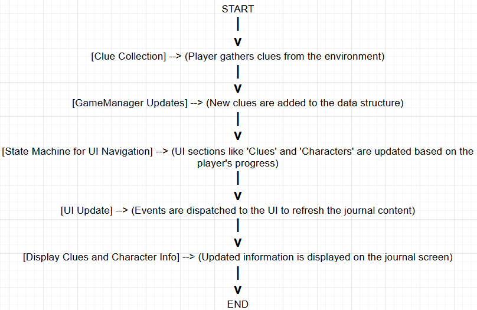

A murder mystery card-battler game where players interrogate suspects through strategic mini-games.
Role & Skills
UI/UX Engineer and Gameplay Developer
Unity, C#, Figma
Processes, Reflections, & References
">
In the Murder Mystery Card-Battler project, I focused extensively on UI/UX design and gameplay mechanics.
My key contributions included:
UI/UX Design:
I created reference designs in Figma for various game screens, including menus, in-game interfaces, and character information.
I finalized the UI for critical game components like the journal and card battler, ensuring a cohesive and accessible user experience.

Card-Battler Design:
I helped in defining the card battler mechanics.
I worked on the 3-lane questioning system and designed how the game’s UI would reflect the player’s progress.
Scene Management and Navigation:
I made significant progress in developing the scene management system in Unity,
enabling smooth transitions between different screens and exploration areas.
Playtesting and Bug Fixes:
I took on the task of resolving UI bugs post-playtesting,
including fixing card battler UI elements and ensuring the playtest feedback was incorporated.
I also worked on adding a notification feature to the journal and ensuring that UI transitions,
like the door system between scenes, worked seamlessly.
I tried to ensure that the game’s user interface was not only functional but also engaging and intuitive,
contributing to the overall immersive experience of the Murder Mystery Card-Battler game.